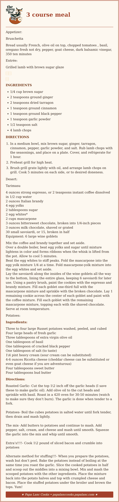

WELCOME
Appetizer:
Bruschetta
Bread usually French, olive oil on top, chopped tomatoes , basil, oregano fresh not dry, pepper, goat cheese, dark balsamic vinegar, 350 ten minutes
Entrée:
Grilled lamb with brown sugar glaze
INGREDIENTS
DIRECTIONS
Desert:
Tarimasu
4 ounces strong espresso, or 2 teaspoons instant coffee dissolved in 1/2 cup water
2 ounces Italian brandy
4 egg yolks
2 tablespoons sugar
2 egg whites*
2 cups mascarpone
3 ounces bittersweet chocolate, broken into 1/4-inch pieces
3 ounces milk chocolate, shaved or grated
30 small savoiardi, or 15, broken in half
Equipment: 6 large wine goblets
Mix the coffee and brandy together and set aside.
Over a double boiler, beat egg yolks and sugar until mixture lightens in color and forms ribbons when the whisk is lifted from the pot. Allow to cool 5 minutes.
Beat the egg whites to stiff peaks. Fold the mascarpone into the egg yolk mixture 1/4 at a time. Fold mascarpone-yolk mixture into the egg whites and set aside.
Lay the savoiardi along the insides of the wine goblets all the way to the bottom, lining the entire glass, keeping 6 savoiardi for later use. Using a pastry brush, paint the cookies with the espresso and brandy mixture. Fill each goblet one-third full with the mascarpone mixture and sprinkle with the broken chocolate. Lay 1 remaining cookie across the center of each goblet and paint with the coffee mixture. Fill each goblet with the remaining mascarpone mixture, topping each with the shaved chocolate. Serve at room temperature.
Potatoes:
Ingredients:
Three to four large Russet potatoes washed, peeled, and cubed
Four large heads of fresh garlic
Three tablespoons of extra virgin olive oil
One tablespoon of basil
One tablespoon of cracked black pepper
One tablespoon of salt (to taste)
1\4 pint heavy cream (sour cream can be substituted)
4-6 ounces Ricotta cheese (cheddar cheese can be substituted or even goat cheese if you are adventurous)
Four tablespoons sweet butter
Four tablespoons bud butter
Directions:
Roasted Garlic- Cut the top 1\2 inch off the garlic heads (I save these to make garlic oil). Add olive oil to the cut heads and sprinkle with basil. Roast in a 420 oven for 30-50 minutes (watch to make sure they don’t burn). The garlic is done when tender to a fork.
Potatoes- Boil the cubes potatoes in salted water until fork tender, then drain and mash lightly.
The mix- Add butters to potatoes and continue to mash. Add pepper, salt, cream, and cheese and mash until smooth. Squeeze the garlic into the mix and whip until smooth.
Extra’s!!!!- Cook 1\2 pound of sliced bacon and crumble into potatoes
Alternate method for stuffing!!!- When you prepare the potatoes, wash but don’t peel. Bake the potatoes instead of boiling at the same time you roast the garlic. Slice the cooked potatoes in half and scoop out the middles into a mixing bowl. Mix and mash the scooped potatoes with the other ingredients. Place the mixture back into the potato halves and top with crumpled cheese and bacon. Place the stuffed potatoes under the broiler and brown the tops. Yum!

WELCOME
Converted from the original file for viewing — open/download the original to edit it.